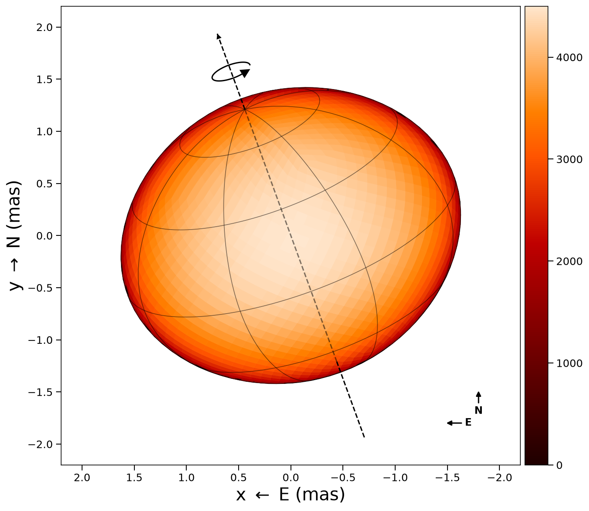
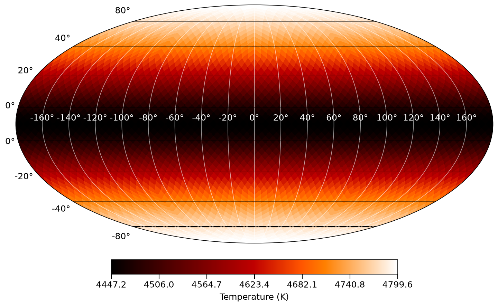

ROTIR
ROTIR is a Julia package for regularized imaging of stellar surfaces from optical interferometry data, developed by Prof. Fabien Baron (Georgia State University) and collaborators.
ROTIR models the stellar surface as a tessellated sphere (or non-spherical geometry) and reconstructs temperature maps by fitting interferometric observables (V², closure phases, triple amplitudes). It supports:
- Multiple surface geometries: spheres, triaxial ellipsoids, rapid rotators, and Roche-lobe-filling stars
- Two tessellation schemes: HEALPix (equal-area, hierarchical) and longitude/latitude grids
- Multi-epoch reconstruction: simultaneously fit data from multiple rotation phases to recover the full surface map
- Multi-resolution imaging: coarse-to-fine HEALPix pyramid for robust convergence
- Joint shape + map optimization: analytical gradients for shape parameters (radii, inclination, position angle) alongside the surface map
- Regularization: total variation (L1, quadratic), maximum entropy, mean constraint, and harmonic bias
ROTIR uses OITOOLS.jl for OIFITS I/O and data handling.
How it works
The forward model maps a temperature map on the stellar surface to interferometric observables:
| Step | Function |
|---|---|
| 1. Tessellate unit sphere | tessellation_healpix(n) or tessellation_latlong(ntheta, nphi) |
| 2. Apply surface geometry | create_star(tessels, star_params, t) |
| 3. Rotate to observer frame | Euler rotation by (phase, inclination, PA) |
| 4. Project to sky plane | Projected quad vertices (proj_west, proj_north) |
| 5. Compute visibility matrix | setup_oi!(data, stars) |
| 6. Temperature to observables | observables(tmap, star, data) |
| 7. Chi-squared + gradient | spheroid_chi2_fg(tmap, g, star, data) |
| 8. Optimize | image_reconstruct_oi(tmap, data, stars) |
Visual examples
A rapid rotator with all plotting annotations (graticules, spin axis, rotation arrow, compass):

The same star in Mollweide projection showing the full-surface temperature map:
